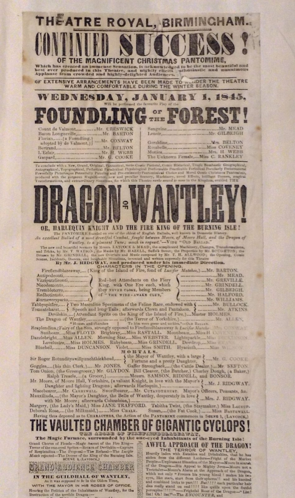

References / Poster / 558
Theatre Royal, Birmingham,
pantomime playbill, 1845
An English Christmas pantomime playbill for New Year’s Day 1845, with condensed and fat display lines above a dense cast list braced and dotted in many small faces.
- Source
- Wikimedia Commons: Theatre Royal Birmingham – playbill – 1844
- Creator
- Unknown printer
- Made
- 1845 (dated on the bill: Wednesday, January 1, 1845; Commons gives 1844)
- Style
- Victorian typography (agent-proposed, not yet reviewed by a person)
- Moods
- Theatrical, busy, festive
- Evidence
- Inspected a 1280 × 2157 px Commons thumbnail, because the full-size original (1216 × 2049 px according to Commons) returned HTTP 429. The thumbnail is slightly upscaled from that original. Commons gives a blog post as source; the holding collection of the physical bill is not named, so the copy is unidentified.
- Reviewed
- Rights
- Open license, stored. License: public domain. Rights policy

Context
Commons describes the file as a playbill from the Theatre Royal, Birmingham, dated 1844, author anonymous, source The Iron Room, and tags it {{PD-anon-70-EU}}.
The bill itself announces the play Foundling of the Forest and the Christmas pantomime The Dragon of Wantley! or, Harlequin Knight and the Fire King of the Burning Isle! for Wednesday, 1 January 1845, “produced under the immediate direction” of Mr. J. Ridgway.
Observed
- “CONTINUED SUCCESS!” uses two faces in one line: a very condensed roman for “CONTINUED” and a fat condensed slab for “SUCCESS!”.
- “DRAGON OF WANTLEY!” is the largest line, in a very condensed heavy roman, with “OF” stacked small between the two words. “FOUNDLING OF THE FOREST!” repeats the trick with “OF THE”.
- “WEDNESDAY, JANUARY 1, 1845,” is set in a wide, letterspaced fat face.
- “THE VAULTED CHAMBER OF GIGANTIC CYCLOPS!” runs full width in a condensed sans-serif capital.
- The cast list fills most of the sheet: dotted leaders join roles to actors, and curly braces group several roles to one description.
- Wide sans-serif, bold roman, italic, small capitals, and an outline letter (“GRAND AUDIENCE CHAMBER”) appear in the small lines.
- Thin rules divide the sections. Black ink on off-white paper, with show-through and creases.
Why it belongs
The British playbill packs more text than the American poster. The display lines act as signposts in a dense page of small type, which is the pattern Meggs’s phrase about every inch of space describes.
Stacking a small “OF” between two big words is a typical device of the condensed theatre line.
Borrow
Stack small joining words between two large words in one line.
Use braces and dotted leaders to organise a dense list without a table.
Measured
Machine-extracted by tools/image-traits.py on . Full measurement.
- Mean chroma
- 0.12
- Palette
- #d0beb1 30%
- #c4b3a6 18%
- #988677 12%
- #b2a090 12%
- #a69484 10%
- #e1cec4 7%
- #4e403b 3%
- #827164 2%

